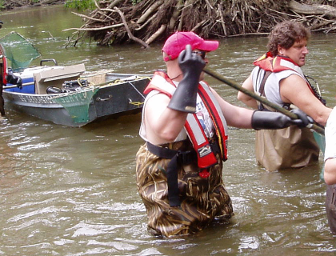

Characterization of Rivermouth Ecosystems
Template #82

U.S. Geological Survey (USGS) scientists are working to identify and understand the role tributaries to the Great Lakes play in influencing the quality of nearshore and deepwater habitats and the dynamics associated with the mixing of river and lake waters. A scientific framework will be developed for restoration and management in these areas.
In 2012 we began to evaluate the effects of Lake Michigan AOCs on organism health and food source within rivermouths, with specific reference to the assessment and possible removal of benthos-related BUIs. We collaborated with the Wisconsin Water Science Center for collection of samples and sharing of data in this effort, and both sample and data analysis is on-going.
A second focus in 2012 was to determine the extent to which land- and river-derived particulate materials support nearshore and deepwater fisheries and supporting foodwebs. In coordination with other research groups within the USGS Great Lakes Science Center, US Fish and Wildlife Service, Michigan DNR, NOAA, and Michigan Water Science Center, and as part of the ‘year of intensive sampling’ effort in Lake Huron, we sampled benthivorous and piscivorous fish from rivermouth, nearshore, mid-water, and deep water sites. Analyses of tissue fatty acids and stable carbon and nitrogen isotopes from these organisms, at different distances from the riverine source, are on-going.
2013 focal efforts were on a rivermouth of tremendous regional importance: the Maumee. In studying the Maumee River, rivermouth model was extended to a larger system, and results immediately were immediately applied to several issues of great concern to regional managers. The focal issues were as follows:
- Restoration of rivermouth wetlands near Toledo, OH
- Better understanding of mechanisms underlying variability in fish recruitment
- Development of a lower river habitat model to evaluate and guide remediation of beneficial use impairments that contribute to AOC delisting
- Assessment of how the occurrence of harmful algal species (and blooms) influence the growth of invertebrates and fish in the Maumee River and Lake Erie receiving waters
Managers can use this framework to match Area of Concern habitat restoration targets to previously identified stream and river mouth impacts on the lakes.
Made substantial progress toward developing a Great Lakes Rivermouth classification system to guide synthesis of research on rivermouths as well as to help define “reference conditions” in support of rivermouth restoration across the Great Lakes.
Analyzed food web conditions and nutrient transformations in >30 rivermouths sampled across the Great Lakes; initial results suggest that:
- Rivermouths alter the relationship between agricultural sources of nitrogen (N) in watersheds and the N delivered to the nearshore of the Great Lakes. Rivermouths also appear to influence the delivery of other nutrients (e.g., phosphorus) and metals (e.g., iron, vanadium) to the nearshore zone. The magnitude of these effects appears to be related to the watershed and rivermouth characteristics.
- Primary consumers (invertebrates) in rivermouths often contain far higher concentrations of essential fatty acids than their counterparts in the nearshore of the Great Lakes. These high-quality rivermouth invertebrates may provide an important food resource for highly mobile consumers (e.g., fish).
Completed two documents that summarize detailed discussions among scientists and managers participating in the Rivermouth Collaboratory: A scientific synthesis titled “Great Lakes Rivermouth Ecosystems: Scientific Synthesis and Management Implications,” currently in review at the Journal of Great Lakes Research and "Great Lakes Rivermouths: A Primer for Managers," to be published by the Great Lakes Commission We have presented 13 talks at international scientific conferences and 3 talks aimed at more general audiences.
Larson, J.H., W.B. Richardson, J. Vallazza, and J.C. Nelson. 2012. An exploratory investigation of the landscape-lake interface: land cover controls over consumer N and C isotopic composition in Lake Michigan river mouths. Journal of Great Lakes Research 38: 610-619. Rivermouth ecosystems are areas where tributary waters mix with near-shore lake waters and provide habitat for many Great Lakes fish and wildlife species. Rivermouths are the interface between terrestrial activities that influence rivers and the ecologically important nearshore. Stable isotopes of nitrogen (N) and carbon (C) in primary consumers (benthic invertebrates) were measured from a range of rivermouth systems to show that strong relationships between watershed agriculture and consumer N in tributaries are weakened or eliminated at the rivermouth, in favor of stronger relationships between consumer N and depositional areas that may favor denitrification (microbial nitrate removal). Despite apparently large riverine inputs, consumer C and N in the rivermouth only occasionally appear river-like. More often consumers seem to incorporate large amounts of C from either the Lake nearshore or primary production within the rivermouth itself. Rivermouths appear to be active C and N processing environments, thus necessitating their explicit incorporation into models estimating nearshore loading and possibly contributing to their importance to Great Lakes biota. This project was funded by the Great Lakes Restoration Initiative. http://www.sciencedirect.com/science/article/pii/S0380133012001918
William Richardson, wrichardson@usgs.gov
608-781-6231
James Larson, jhlarson@usgs.gov
708-781-6268
Jeff Schaeffer, jschaeffer@usg.gov
734-214-7250
Paul Seelbach, pseelbach@usgs.gov
734-214-7253
Jack Waide, jwaide@usgs.gov
608-781-6269